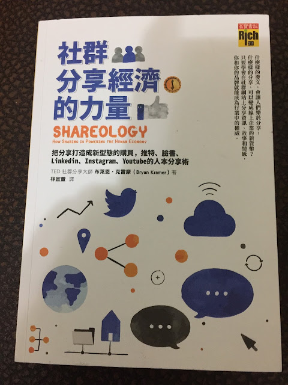

我們該把目光放在哪裡？
這幾天有機會連續跟博克多的老闆陳大黑、蓬勃網球學院的執行長 Jeff Hsu，以及 UnderArmour 與 Garmin 的行銷負責人見面。都談到一個議題：剛進入這個產業的私人教練或辦課單位，儘管很專業，但收不到學生。Jeff 提到一個例子，喜歡打高爾夫球的人願意花五萬元在會費和場地費上，但不願意花兩千元上一個專業教練的課。不少教練會埋怨這個市場不成熟，沒有人願意尊重專業，這跟我從跑步與鐵人教練、辦課單位所聽到的聲音是很類似的。
在《被討厭的勇氣Ⅱ》中有一段我非常喜歡的對話，也曾在課堂上跟 Garmin PB 班的學員分享過，先把全文截錄如下(摘自《被討厭的勇氣 二部曲》，2016 年 11 月出版，頁 82)：
哲學家拿出一個用紙摺成的三角柱。從年輕人所在位置可以看到的，只有三個平面中的兩面。上面分別寫著「可惡的他」，還有「可憐的我」。哲學家說，那些煩惱苦思的人所訴說的，其實不過就是兩項的其中之一。接著，哲學家以細長的手指緩緩轉動三角柱，露出寫在最後一面的字。就像在年輕人心口上挖了一個洞似的那一行字……
……
……
「今後該怎麼辦？」
沒錯，教練該把目光放在「今後該怎麼辦？」上面，而非把精力放在市場還沒成熟、選手與品牌不尊重專業、政府單位不支持或該運動協會很黑箱很官僚，更不用去想自己招不到學生有多可憐。而是想今後該怎麼辦！
就我看來，教練們與辦課單位今後要做的事很多，但這些事可以歸結為兩個字：「分享」
也許市場不成熟與不尊重專業是事實，但我認為大多數的教練都不夠認真把自己的專業分享出來，所以也沒有人知道你的專業何在。
這裡指的分享專業是指知識、經驗與你的心態，而非看得到的證照、成績或肌肉。
岸見一郎說，若阿德勒讀到聖經中「凡祈求的，就得著」這句話，一定會想改成「凡給予的，就得著」。
他接著這樣形容：不該等「人家給你」，不可以變成心靈的乞丐……所以當我們願意向有需求的他者佈施尊敬、信任、知識與經驗(給予)之後，人的生活才會變得愈來愈富有(得著)，得著的並不只是看得到的金錢，而是包括更寶貴的、看不到的精神與心靈上的「滿足感」。

分享的意圖與動作，非常重要。在上個月剛出版的《社群分享經濟的力量》（Shareology）中點出了分享和經濟之間的關係。這一本書是我為了山姆邀約的這場對談：[座談] 公開分享的力量（徐國峰×山姆伯伯）而買的一本書。說實在的，這本書寫得並不好，觀點論述不夠深入，章節與章節間的連結也不夠密切；書中提出了許多問題，但論述脈絡不夠清楚。不過還是點出了許多重要且有趣的觀點。
針對分享的本質、原由與方法，我將在明年 1 月 13 日（五）晚七點半～九點跟山姆伯伯對談，我們將分別從個人與辦課單位的角度談「分享」這兩個字。這是一場「座談會」的形式，目的在交流，一開始是我和山姆的交流，最後半個小時是現場其他聽眾與我們兩位的交流。有興趣的朋友，歡迎前來：https://goo.gl/ZhV2Ov